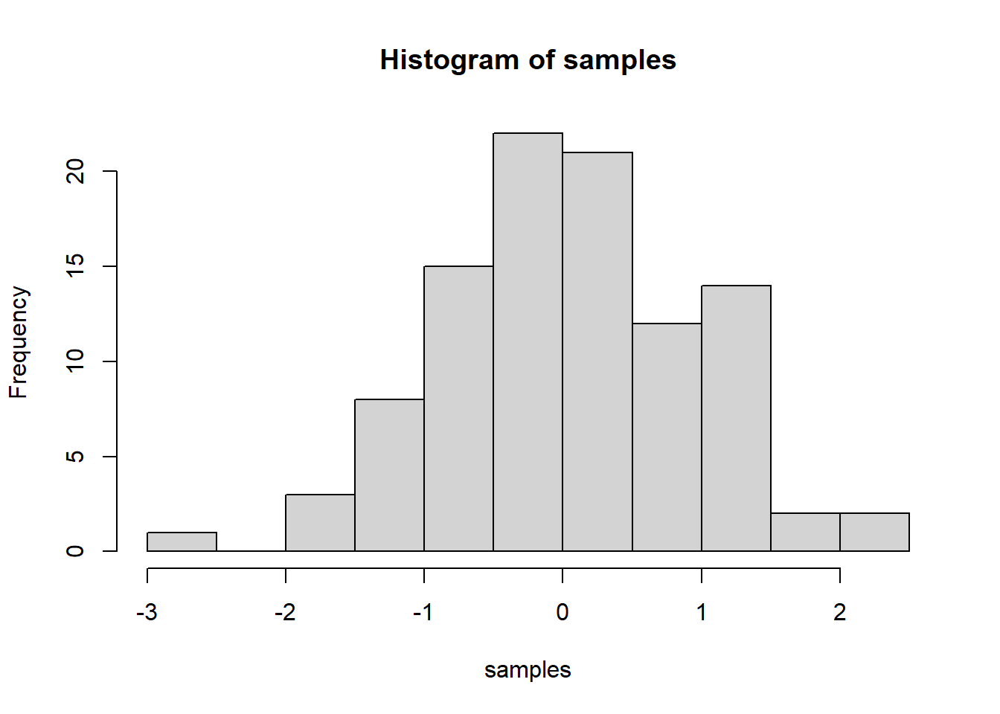

Journal (reproducible report)
Veeresh Veeresh
2020-11-05
IMPORTANT: You can delete everything in here and start fresh. You might want to start by not deleting anything above this line until you know what that stuff is doing.
This is an .Rmd file. It is plain text with special features. Any time you write just like this, it will be compiled to normal text in the website. If you put a # in front of your text, it will create a top level-header.
1 Challenge : Intro to the tidyverse
Last compiled: 2020-12-06
1.1 Problem Statment :-
" Analyze the sales by location (state) with a bar plot. Since state and city are multiple features (variables), they should be split. Which state has the highes revenue? Replace your bike_orderlines_wrangled_tbl object with the newly wrangled object (with the columns state and city)."
# 2.0 Importing library ----
library(readxl)
library(dplyr)
library(stringr)
library(rlang)
library(tidyr)
library(lubridate)
library(ggplot2)
library(writexl)
library(readr)
# 2.0 Importing Files ----
# A good convention is to use the file name and suffix it with tbl for the data structure tibble
bikes_tbl <- read_excel("C:/Users/veere/OneDrive/Desktop/Third/Bussines Data Science/DS_101/DS_101/00_data/01_bike_sales/01_raw_data/bikes.xlsx")
orderlines_tbl <- read_excel("C:/Users/veere/OneDrive/Desktop/Third/Bussines Data Science/DS_101/DS_101/00_data/01_bike_sales/01_raw_data/orderlines.xlsx")
bikeshops_tbl <- read_excel("C:/Users/veere/OneDrive/Desktop/Third/Bussines Data Science/DS_101/DS_101/00_data/01_bike_sales/01_raw_data/bikeshops.xlsx")
# If the data has no common column name, you can provide each column name in the "by" argument. For example, by = c("a" = "b") will match x.a to y.b. The order of the columns has to match the order of the tibbles).
left_join(orderlines_tbl, bikes_tbl, by = c("product.id" = "bike.id"))## # A tibble: 15,644 x 15
## ...1 order.id order.line order.date customer.id product.id quantity
## <chr> <dbl> <dbl> <dttm> <dbl> <dbl> <dbl>
## 1 1 1 1 2015-01-07 00:00:00 2 2681 1
## 2 2 1 2 2015-01-07 00:00:00 2 2411 1
## 3 3 2 1 2015-01-10 00:00:00 10 2629 1
## 4 4 2 2 2015-01-10 00:00:00 10 2137 1
## 5 5 3 1 2015-01-10 00:00:00 6 2367 1
## 6 6 3 2 2015-01-10 00:00:00 6 1973 1
## 7 7 3 3 2015-01-10 00:00:00 6 2422 1
## 8 8 3 4 2015-01-10 00:00:00 6 2655 1
## 9 9 3 5 2015-01-10 00:00:00 6 2247 1
## 10 10 4 1 2015-01-11 00:00:00 22 2408 1
## # ... with 15,634 more rows, and 8 more variables: model <chr>,
## # model.year <dbl>, frame.material <chr>, weight <dbl>, price <dbl>,
## # category <chr>, gender <chr>, url <chr># Chaining commands with the pipe and assigning it to
bike_orderlines_joined_tbl <- orderlines_tbl %>%
left_join(bikes_tbl, by = c("product.id" = "bike.id")) %>%
left_join(bikeshops_tbl, by = c("customer.id" = "bikeshop.id"))
# Examine the results with glimpse()
bike_orderlines_joined_tbl %>% glimpse()## Rows: 15,644
## Columns: 19
## $ ...1 <chr> "1", "2", "3", "4", "5", "6", "7", "8", "9", "10", "...
## $ order.id <dbl> 1, 1, 2, 2, 3, 3, 3, 3, 3, 4, 5, 5, 5, 5, 6, 6, 6, 6...
## $ order.line <dbl> 1, 2, 1, 2, 1, 2, 3, 4, 5, 1, 1, 2, 3, 4, 1, 2, 3, 4...
## $ order.date <dttm> 2015-01-07, 2015-01-07, 2015-01-10, 2015-01-10, 201...
## $ customer.id <dbl> 2, 2, 10, 10, 6, 6, 6, 6, 6, 22, 8, 8, 8, 8, 16, 16,...
## $ product.id <dbl> 2681, 2411, 2629, 2137, 2367, 1973, 2422, 2655, 2247...
## $ quantity <dbl> 1, 1, 1, 1, 1, 1, 1, 1, 1, 1, 1, 2, 1, 1, 1, 1, 1, 1...
## $ model <chr> "Spectral CF 7 WMN", "Ultimate CF SLX Disc 8.0 ETAP"...
## $ model.year <dbl> 2021, 2020, 2021, 2019, 2020, 2020, 2020, 2021, 2020...
## $ frame.material <chr> "carbon", "carbon", "carbon", "carbon", "aluminium",...
## $ weight <dbl> 13.80, 7.44, 14.06, 8.80, 11.50, 8.80, 8.20, 8.85, 1...
## $ price <dbl> 3119, 5359, 2729, 1749, 1219, 1359, 2529, 1559, 3899...
## $ category <chr> "Mountain - Trail - Spectral", "Road - Race - Ultima...
## $ gender <chr> "female", "unisex", "unisex", "unisex", "unisex", "u...
## $ url <chr> "https://www.canyon.com/en-de/mountain-bikes/trail-b...
## $ name <chr> "AlexandeRad", "AlexandeRad", "WITT-RAD", "WITT-RAD"...
## $ location <chr> "Hamburg, Hamburg", "Hamburg, Hamburg", "Bremen, Bre...
## $ lat <dbl> 53.57532, 53.57532, 53.07379, 53.07379, 48.78234, 48...
## $ lng <dbl> 10.015340, 10.015340, 8.826754, 8.826754, 9.180819, ...bike_orderlines_joined_tbl %>%
select(category) %>%
filter(str_detect(category, "^Mountain")) %>%
unique()## # A tibble: 10 x 1
## category
## <chr>
## 1 Mountain - Trail - Spectral
## 2 Mountain - Trail - Neuron
## 3 Mountain - Dirt Jump - Stitched
## 4 Mountain - Enduro - Torque
## 5 Mountain - Trail - Grand Canyon
## 6 Mountain - Cross-Country - Lux
## 7 Mountain - Enduro - Strive
## 8 Mountain - Downhill - Sender
## 9 Mountain - Fat Bikes - Dude
## 10 Mountain - Cross-Country - Exceed# 3.0 Wrangling Data ----
# All actions are chained with the pipe already. You can perform each step separately and use glimpse() or View() to validate your code. Store the result in a variable at the end of the steps.
bike_orderlines_wrangled_tbl <- bike_orderlines_joined_tbl %>%
# 3.1 Separate category name
separate (col= category,into = c("category.1", "category.2", "category.3"),sep= " - ")%>%
# 3.2 Add the total price (price * quantity)
# Add a column to a tibble that uses a formula-style calculation of other columns
mutate(total.price = price * quantity) %>%
# 3.3 Optional: Reorganize. Using select to grab or remove unnecessary columns
# 3.3.1 by exact column name
select(-...1, -gender) %>%
# 3.3.2 by a pattern
# You can use the select_helpers to define patterns.
# Type ?ends_with and click on Select helpers in the documentation
select(-ends_with(".id")) %>%
# 3.3.3 Actually we need the column "order.id". Let's bind it back to the data
bind_cols(bike_orderlines_joined_tbl %>% select(order.id)) %>%
# 3.3.4 You can reorder the data by selecting the columns in your desired order.
# You can use select_helpers like contains() or everything()
select(order.id, contains("order"), contains("model"), contains("category"),
price, quantity, total.price,
everything()) %>%
# 3.4 Rename columns because we actually wanted underscores instead of the dots
# (one at the time vs. multiple at once)
rename(bikeshop = name) %>%
set_names(names(.) %>% str_replace_all("\\.", "_"))
# 4.0 Business Insights ----
# 4.1 Sales by location ----
# Step 1 - Manipulate
sales_by_state_cat_1_tbl <- bike_orderlines_wrangled_tbl %>%
# Select columns
tidyr::separate(col = location,
into = c("city","state"),
sep = ",") %>%
# Select columns and add a year
select(state, total_price) %>%
# Group by and summarize year and main catgegory
group_by(state) %>%
summarise(sales = sum(total_price)) %>%
ungroup()
sales_by_state_cat_1_tbl## # A tibble: 12 x 2
## state sales
## <chr> <dbl>
## 1 " Baden-Württemberg" 6521090
## 2 " Bavaria" 6742819
## 3 " Berlin" 1128433
## 4 " Bremen" 10653499
## 5 " Hamburg" 3874756
## 6 " Hesse" 1558901
## 7 " Lower Saxony" 4107115
## 8 " Mecklenburg-Western Pomerania" 618974
## 9 " North Rhine-Westphalia" 21200613
## 10 " Saxony" 2230245
## 11 " Saxony-Anhalt" 569614
## 12 " Schleswig-Holstein" 3224749# Step to Visualize
sales_by_state_cat_1_tbl %>%
# Set up x, y, fill
ggplot(aes(x = state, y = sales)) +
# Geometries
geom_col() + # Run up to here to get a stacked bar plot
# Formatting
scale_y_continuous(labels = scales::dollar_format(big.mark = ".",
decimal.mark = ",",
prefix = "",
suffix = " €")) +
theme(axis.text.x = element_text(angle = 45, hjust = 1))+
labs(
title = "Revenue by year and main category",
subtitle = "Each product category has an upward trend",
fill = "Main category" # Changes the legend name
)
1.2 Problem Statment 1.2
Analyze the sales by location and year (facet_wrap). Because there are 12 states with bike stores, you should get 12 plots. Insert your scripts and results into your website. It might be easier to move your entire project folder into your website folder.
# 2.0 Importing library ----
library(readxl)
library(dplyr)
library(stringr)
library(rlang)
library(tidyr)
library(lubridate)
library(ggplot2)
library(writexl)
library(readr)
# 2.0 Importing Files ----
# A good convention is to use the file name and suffix it with tbl for the data structure tibble
bikes_tbl <- read_excel("C:/Users/veere/OneDrive/Desktop/Third/Bussines Data Science/DS_101/DS_101/00_data/01_bike_sales/01_raw_data/bikes.xlsx")
orderlines_tbl <- read_excel("C:/Users/veere/OneDrive/Desktop/Third/Bussines Data Science/DS_101/DS_101/00_data/01_bike_sales/01_raw_data/orderlines.xlsx")
bikeshops_tbl <- read_excel("C:/Users/veere/OneDrive/Desktop/Third/Bussines Data Science/DS_101/DS_101/00_data/01_bike_sales/01_raw_data/bikeshops.xlsx")
# If the data has no common column name, you can provide each column name in the "by" argument. For example, by = c("a" = "b") will match x.a to y.b. The order of the columns has to match the order of the tibbles).
left_join(orderlines_tbl, bikes_tbl, by = c("product.id" = "bike.id"))## # A tibble: 15,644 x 15
## ...1 order.id order.line order.date customer.id product.id quantity
## <chr> <dbl> <dbl> <dttm> <dbl> <dbl> <dbl>
## 1 1 1 1 2015-01-07 00:00:00 2 2681 1
## 2 2 1 2 2015-01-07 00:00:00 2 2411 1
## 3 3 2 1 2015-01-10 00:00:00 10 2629 1
## 4 4 2 2 2015-01-10 00:00:00 10 2137 1
## 5 5 3 1 2015-01-10 00:00:00 6 2367 1
## 6 6 3 2 2015-01-10 00:00:00 6 1973 1
## 7 7 3 3 2015-01-10 00:00:00 6 2422 1
## 8 8 3 4 2015-01-10 00:00:00 6 2655 1
## 9 9 3 5 2015-01-10 00:00:00 6 2247 1
## 10 10 4 1 2015-01-11 00:00:00 22 2408 1
## # ... with 15,634 more rows, and 8 more variables: model <chr>,
## # model.year <dbl>, frame.material <chr>, weight <dbl>, price <dbl>,
## # category <chr>, gender <chr>, url <chr># Chaining commands with the pipe and assigning it to
bike_orderlines_joined_tbl <- orderlines_tbl %>%
left_join(bikes_tbl, by = c("product.id" = "bike.id")) %>%
left_join(bikeshops_tbl, by = c("customer.id" = "bikeshop.id"))
# Examine the results with glimpse()
bike_orderlines_joined_tbl %>% glimpse()## Rows: 15,644
## Columns: 19
## $ ...1 <chr> "1", "2", "3", "4", "5", "6", "7", "8", "9", "10", "...
## $ order.id <dbl> 1, 1, 2, 2, 3, 3, 3, 3, 3, 4, 5, 5, 5, 5, 6, 6, 6, 6...
## $ order.line <dbl> 1, 2, 1, 2, 1, 2, 3, 4, 5, 1, 1, 2, 3, 4, 1, 2, 3, 4...
## $ order.date <dttm> 2015-01-07, 2015-01-07, 2015-01-10, 2015-01-10, 201...
## $ customer.id <dbl> 2, 2, 10, 10, 6, 6, 6, 6, 6, 22, 8, 8, 8, 8, 16, 16,...
## $ product.id <dbl> 2681, 2411, 2629, 2137, 2367, 1973, 2422, 2655, 2247...
## $ quantity <dbl> 1, 1, 1, 1, 1, 1, 1, 1, 1, 1, 1, 2, 1, 1, 1, 1, 1, 1...
## $ model <chr> "Spectral CF 7 WMN", "Ultimate CF SLX Disc 8.0 ETAP"...
## $ model.year <dbl> 2021, 2020, 2021, 2019, 2020, 2020, 2020, 2021, 2020...
## $ frame.material <chr> "carbon", "carbon", "carbon", "carbon", "aluminium",...
## $ weight <dbl> 13.80, 7.44, 14.06, 8.80, 11.50, 8.80, 8.20, 8.85, 1...
## $ price <dbl> 3119, 5359, 2729, 1749, 1219, 1359, 2529, 1559, 3899...
## $ category <chr> "Mountain - Trail - Spectral", "Road - Race - Ultima...
## $ gender <chr> "female", "unisex", "unisex", "unisex", "unisex", "u...
## $ url <chr> "https://www.canyon.com/en-de/mountain-bikes/trail-b...
## $ name <chr> "AlexandeRad", "AlexandeRad", "WITT-RAD", "WITT-RAD"...
## $ location <chr> "Hamburg, Hamburg", "Hamburg, Hamburg", "Bremen, Bre...
## $ lat <dbl> 53.57532, 53.57532, 53.07379, 53.07379, 48.78234, 48...
## $ lng <dbl> 10.015340, 10.015340, 8.826754, 8.826754, 9.180819, ...bike_orderlines_joined_tbl %>%
select(category) %>%
filter(str_detect(category, "^Mountain")) %>%
unique()## # A tibble: 10 x 1
## category
## <chr>
## 1 Mountain - Trail - Spectral
## 2 Mountain - Trail - Neuron
## 3 Mountain - Dirt Jump - Stitched
## 4 Mountain - Enduro - Torque
## 5 Mountain - Trail - Grand Canyon
## 6 Mountain - Cross-Country - Lux
## 7 Mountain - Enduro - Strive
## 8 Mountain - Downhill - Sender
## 9 Mountain - Fat Bikes - Dude
## 10 Mountain - Cross-Country - Exceed# 3.0 Wrangling Data ----
# All actions are chained with the pipe already. You can perform each step separately and use glimpse() or View() to validate your code. Store the result in a variable at the end of the steps.
bike_orderlines_wrangled_tbl <- bike_orderlines_joined_tbl %>%
# 3.1 Separate category name
separate (col= category,into = c("category.1", "category.2", "category.3"),sep= " - ")%>%
# 3.2 Add the total price (price * quantity)
# Add a column to a tibble that uses a formula-style calculation of other columns
mutate(total.price = price * quantity) %>%
# 3.3 Optional: Reorganize. Using select to grab or remove unnecessary columns
# 3.3.1 by exact column name
select(-...1, -gender) %>%
# 3.3.2 by a pattern
# You can use the select_helpers to define patterns.
# Type ?ends_with and click on Select helpers in the documentation
select(-ends_with(".id")) %>%
# 3.3.3 Actually we need the column "order.id". Let's bind it back to the data
bind_cols(bike_orderlines_joined_tbl %>% select(order.id)) %>%
# 3.3.4 You can reorder the data by selecting the columns in your desired order.
# You can use select_helpers like contains() or everything()
select(order.id, contains("order"), contains("model"), contains("category"),
price, quantity, total.price,
everything()) %>%
# 3.4 Rename columns because we actually wanted underscores instead of the dots
# (one at the time vs. multiple at once)
rename(bikeshop = name) %>%
set_names(names(.) %>% str_replace_all("\\.", "_"))
# 4.0 Business Insights ----
# 4.1 Sales by location ----
# Step 1 - Manipulate
sales_by_year_state_cat_1_tbl <- bike_orderlines_wrangled_tbl %>%
tidyr::separate(col = location,
into = c("city","state"),
sep = ",") %>%
# Select columns and add a year
select(state,order_date, total_price) %>%
mutate(year = year(order_date)) %>%
# Group by and summarize year and main catgegory
group_by(year,state) %>%
summarise(sales = sum(total_price)) %>%
ungroup()
# Step 2 - Visualize
sales_by_year_state_cat_1_tbl %>%
# Set up x, y, fill
ggplot(aes(x = year, y = sales, fill = state )) +
# Geometries
geom_col() + # Run up to here to get a stacked bar plot
facet_wrap(~ state)+
# Formatting
scale_y_continuous(labels = scales::dollar_format(big.mark = ".",
decimal.mark = ",",
prefix = "",
suffix = " €")) +
theme(axis.text.x = element_text(angle = 45, hjust = 1))+
labs(
title = "Revenue by year and main category",
subtitle = "Each product category has an upward trend",
fill = "Main category" # Changes the legend name
)
2 Challenge : Data Acquisition
Last compiled: 2020-12-06
2.1 Problem Statment :-
" Get some data via an API. There are millions of providers, that offer API access for free and have good documentation about how to query their service. You just have to google them. You can use whatever service you want. For example, you can get data about your listening history (spotify), get data about flights (skyscanner) or just check the weather forecast."
## API Challenge
### This API to find out when the ISS (International Space Station) will be passing over Hamburg (which is at latitude 53.5511, longitude: 9.9937):
#This API returns times to us in the form of Unix time.
library(glue)
library(httr)
library(jsonlite)
resp <- GET("http://api.open-notify.org/iss-pass.json", query = list(lat =53.5511, lon = 9.9937))
resp## Response [http://api.open-notify.org/iss-pass.json?lat=53.5511&lon=9.9937]
## Date: 2020-12-06 18:57
## Status: 200
## Content-Type: application/json
## Size: 522 B
## {
## "message": "success",
## "request": {
## "altitude": 100,
## "datetime": 1607280489,
## "latitude": 53.5511,
## "longitude": 9.9937,
## "passes": 5
## },
## "response": [
## ...data = fromJSON(rawToChar(resp$content))
data## $message
## [1] "success"
##
## $request
## $request$altitude
## [1] 100
##
## $request$datetime
## [1] 1607280489
##
## $request$latitude
## [1] 53.5511
##
## $request$longitude
## [1] 9.9937
##
## $request$passes
## [1] 5
##
##
## $response
## duration risetime
## 1 303 1607280934
## 2 391 1607335587
## 3 608 1607341228
## 4 649 1607346990
## 5 650 16073527872.2 Problem Statment :-
" Scrape one of the competitor websites of canyon (either https://www.rosebikes.de/ or https://www.radon-bikes.de) and create a small database. The database should contain the model names and prices for at least one category. Use the selectorgadget to get a good understanding of the website structure."
# WEBSCRAPING ----
# 1.0 LIBRARIES ----
library(tidyverse) # Main Package - Loads dplyr, purrr, etc.
library(rvest) # HTML Hacking & Web Scraping
library(xopen) # Quickly opening URLs
library(jsonlite) # converts JSON files to R objects
library(glue) # concatenate strings
library(stringi) # character string/text processing
# 1.1 COLLECT PRODUCT TYPES ----
url_home <- "https://www.radon-bikes.de/"
xopen(url_home)## Running cmd /c start "\"\"" /b "https://www.radon-bikes.de/"html_home <- read_html(url_home)
bike_family_tbl <- html_home %>%
html_nodes(css = ".megamenu__item > a") %>%
html_attr('href') %>%
discard(.p = ~stringr::str_detect(.x,"wear")) %>%
enframe(name = "position", value = "cat_subcat_url") %>%
mutate(family_id = str_glue("https://www.radon-bikes.de{cat_subcat_url}bikegrid"))
bike_family_tbl## # A tibble: 8 x 3
## position cat_subcat_url family_id
## <int> <chr> <glue>
## 1 1 /mountainbike/hardtail/ https://www.radon-bikes.de/mountainbike/har~
## 2 2 /mountainbike/fullsuspe~ https://www.radon-bikes.de/mountainbike/ful~
## 3 3 /trekking-cross/trekkin~ https://www.radon-bikes.de/trekking-cross/t~
## 4 4 /trekking-cross/cross/ https://www.radon-bikes.de/trekking-cross/c~
## 5 5 /e-bike/mountainbike/ https://www.radon-bikes.de/e-bike/mountainb~
## 6 6 /e-bike/trekking/ https://www.radon-bikes.de/e-bike/trekking/~
## 7 7 /roadbike/carbon/ https://www.radon-bikes.de/roadbike/carbon/~
## 8 8 /roadbike/alu/ https://www.radon-bikes.de/roadbike/alu/bik~# 2.0 COLLECT BIKE DATA ----
bike_category_url <- bike_family_tbl$family_id[1]
xopen(bike_category_url)## Running cmd /c start "\"\"" /b \
## "https://www.radon-bikes.de/mountainbike/hardtail/bikegrid"html_bike_category <- read_html(bike_category_url)
bike_name_tbl <- html_bike_category %>%
html_nodes(css = ".m-bikegrid__info .a-heading--small") %>%
html_text() %>%
enframe(name = "position", value = "name")
bike_name_tbl ## # A tibble: 33 x 2
## position name
## <int> <chr>
## 1 1 "\n JEALOUS 8.0\n ~
## 2 2 "\n JEALOUS 9.0\n ~
## 3 3 "\n JEALOUS 10.0\n ~
## 4 4 "\n JEALOUS 10.0 EA\n ~
## 5 5 "\n JEALOUS 10.0\n ~
## 6 6 "\n JEALOUS 10.0 EA\n ~
## 7 7 "\n NEW JEALOUS SUPERLITE 1X\n ~
## 8 8 "\n JEALOUS AL 8.0\n ~
## 9 9 "\n JEALOUS AL 8.0 HD\n ~
## 10 10 "\n JEALOUS AL 9.0\n ~
## # ... with 23 more rowsbike_price_tbl <- html_bike_category %>%
html_nodes(css = ".m-bikegrid__price.currency_eur .m-bikegrid__price--active") %>%
html_text() %>%
enframe(name = "position", value = "price")
bike_price_tbl## # A tibble: 33 x 2
## position price
## <int> <chr>
## 1 1 2599 €
## 2 2 2999 €
## 3 3 3999 €
## 4 4 5299 €
## 5 5 3699 €
## 6 6 3799€
## 7 7 999 €
## 8 8 999 €
## 9 9 1299 €
## 10 10 1499 €
## # ... with 23 more rowsmodel_price_tbl <- left_join(bike_name_tbl, bike_price_tbl)%>%
select(name, price)
model_price_tbl## # A tibble: 33 x 2
## name price
## <chr> <chr>
## 1 "\n JEALOUS 8.0\n ~ 2599~
## 2 "\n JEALOUS 9.0\n ~ 2999~
## 3 "\n JEALOUS 10.0\n ~ 3999~
## 4 "\n JEALOUS 10.0 EA\n ~ 5299~
## 5 "\n JEALOUS 10.0\n ~ 3699~
## 6 "\n JEALOUS 10.0 EA\n ~ 3799€
## 7 "\n NEW JEALOUS SUPERLITE 1X\n ~ 999 €
## 8 "\n JEALOUS AL 8.0\n ~ 999 €
## 9 "\n JEALOUS AL 8.0 HD\n ~ 1299~
## 10 "\n JEALOUS AL 9.0\n ~ 1499~
## # ... with 23 more rows3 Challenge : Data Visualization
Last compiled: 2020-12-06
3.1 Problem Statement :
“Goal: Map the time course of the cumulative Covid-19 cases!”
# Data Visualization
# Importing library-----
library(tidyverse)
library(data.table)
library(ggplot2)
library(ggrepel)
# Importing Data from given url-----
url <- "https://opendata.ecdc.europa.eu/covid19/casedistribution/csv"
covid_data_tbl <- fread(url)
class(covid_data_tbl)## [1] "data.table" "data.frame"colnames(covid_data_tbl)## [1] "dateRep"
## [2] "day"
## [3] "month"
## [4] "year"
## [5] "cases"
## [6] "deaths"
## [7] "countriesAndTerritories"
## [8] "geoId"
## [9] "countryterritoryCode"
## [10] "popData2019"
## [11] "continentExp"
## [12] "Cumulative_number_for_14_days_of_COVID-19_cases_per_100000"str(covid_data_tbl)## Classes 'data.table' and 'data.frame': 60196 obs. of 12 variables:
## $ dateRep : chr "06/12/2020" "05/12/2020" "04/12/2020" "03/12/2020" ...
## $ day : int 6 5 4 3 2 1 30 29 28 27 ...
## $ month : int 12 12 12 12 12 12 11 11 11 11 ...
## $ year : int 2020 2020 2020 2020 2020 2020 2020 2020 2020 2020 ...
## $ cases : int 234 235 119 202 400 272 0 228 214 0 ...
## $ deaths : int 10 18 5 19 48 11 0 11 15 0 ...
## $ countriesAndTerritories : chr "Afghanistan" "Afghanistan" "Afghanistan" "Afghanistan" ...
## $ geoId : chr "AF" "AF" "AF" "AF" ...
## $ countryterritoryCode : chr "AFG" "AFG" "AFG" "AFG" ...
## $ popData2019 : int 38041757 38041757 38041757 38041757 38041757 38041757 38041757 38041757 38041757 38041757 ...
## $ continentExp : chr "Asia" "Asia" "Asia" "Asia" ...
## $ Cumulative_number_for_14_days_of_COVID-19_cases_per_100000: num 7.33 7.12 7.11 7.54 7.01 ...
## - attr(*, ".internal.selfref")=<externalptr>#check the unique country present.
unique(covid_data_tbl$countriesAndTerritories)## [1] "Afghanistan"
## [2] "Albania"
## [3] "Algeria"
## [4] "Andorra"
## [5] "Angola"
## [6] "Anguilla"
## [7] "Antigua_and_Barbuda"
## [8] "Argentina"
## [9] "Armenia"
## [10] "Aruba"
## [11] "Australia"
## [12] "Austria"
## [13] "Azerbaijan"
## [14] "Bahamas"
## [15] "Bahrain"
## [16] "Bangladesh"
## [17] "Barbados"
## [18] "Belarus"
## [19] "Belgium"
## [20] "Belize"
## [21] "Benin"
## [22] "Bermuda"
## [23] "Bhutan"
## [24] "Bolivia"
## [25] "Bonaire, Saint Eustatius and Saba"
## [26] "Bosnia_and_Herzegovina"
## [27] "Botswana"
## [28] "Brazil"
## [29] "British_Virgin_Islands"
## [30] "Brunei_Darussalam"
## [31] "Bulgaria"
## [32] "Burkina_Faso"
## [33] "Burundi"
## [34] "Cambodia"
## [35] "Cameroon"
## [36] "Canada"
## [37] "Cape_Verde"
## [38] "Cases_on_an_international_conveyance_Japan"
## [39] "Cayman_Islands"
## [40] "Central_African_Republic"
## [41] "Chad"
## [42] "Chile"
## [43] "China"
## [44] "Colombia"
## [45] "Comoros"
## [46] "Congo"
## [47] "Costa_Rica"
## [48] "Cote_dIvoire"
## [49] "Croatia"
## [50] "Cuba"
## [51] "Curaçao"
## [52] "Cyprus"
## [53] "Czechia"
## [54] "Democratic_Republic_of_the_Congo"
## [55] "Denmark"
## [56] "Djibouti"
## [57] "Dominica"
## [58] "Dominican_Republic"
## [59] "Ecuador"
## [60] "Egypt"
## [61] "El_Salvador"
## [62] "Equatorial_Guinea"
## [63] "Eritrea"
## [64] "Estonia"
## [65] "Eswatini"
## [66] "Ethiopia"
## [67] "Falkland_Islands_(Malvinas)"
## [68] "Faroe_Islands"
## [69] "Fiji"
## [70] "Finland"
## [71] "France"
## [72] "French_Polynesia"
## [73] "Gabon"
## [74] "Gambia"
## [75] "Georgia"
## [76] "Germany"
## [77] "Ghana"
## [78] "Gibraltar"
## [79] "Greece"
## [80] "Greenland"
## [81] "Grenada"
## [82] "Guam"
## [83] "Guatemala"
## [84] "Guernsey"
## [85] "Guinea"
## [86] "Guinea_Bissau"
## [87] "Guyana"
## [88] "Haiti"
## [89] "Holy_See"
## [90] "Honduras"
## [91] "Hungary"
## [92] "Iceland"
## [93] "India"
## [94] "Indonesia"
## [95] "Iran"
## [96] "Iraq"
## [97] "Ireland"
## [98] "Isle_of_Man"
## [99] "Israel"
## [100] "Italy"
## [101] "Jamaica"
## [102] "Japan"
## [103] "Jersey"
## [104] "Jordan"
## [105] "Kazakhstan"
## [106] "Kenya"
## [107] "Kosovo"
## [108] "Kuwait"
## [109] "Kyrgyzstan"
## [110] "Laos"
## [111] "Latvia"
## [112] "Lebanon"
## [113] "Lesotho"
## [114] "Liberia"
## [115] "Libya"
## [116] "Liechtenstein"
## [117] "Lithuania"
## [118] "Luxembourg"
## [119] "Madagascar"
## [120] "Malawi"
## [121] "Malaysia"
## [122] "Maldives"
## [123] "Mali"
## [124] "Malta"
## [125] "Marshall_Islands"
## [126] "Mauritania"
## [127] "Mauritius"
## [128] "Mexico"
## [129] "Moldova"
## [130] "Monaco"
## [131] "Mongolia"
## [132] "Montenegro"
## [133] "Montserrat"
## [134] "Morocco"
## [135] "Mozambique"
## [136] "Myanmar"
## [137] "Namibia"
## [138] "Nepal"
## [139] "Netherlands"
## [140] "New_Caledonia"
## [141] "New_Zealand"
## [142] "Nicaragua"
## [143] "Niger"
## [144] "Nigeria"
## [145] "North_Macedonia"
## [146] "Northern_Mariana_Islands"
## [147] "Norway"
## [148] "Oman"
## [149] "Pakistan"
## [150] "Palestine"
## [151] "Panama"
## [152] "Papua_New_Guinea"
## [153] "Paraguay"
## [154] "Peru"
## [155] "Philippines"
## [156] "Poland"
## [157] "Portugal"
## [158] "Puerto_Rico"
## [159] "Qatar"
## [160] "Romania"
## [161] "Russia"
## [162] "Rwanda"
## [163] "Saint_Kitts_and_Nevis"
## [164] "Saint_Lucia"
## [165] "Saint_Vincent_and_the_Grenadines"
## [166] "San_Marino"
## [167] "Sao_Tome_and_Principe"
## [168] "Saudi_Arabia"
## [169] "Senegal"
## [170] "Serbia"
## [171] "Seychelles"
## [172] "Sierra_Leone"
## [173] "Singapore"
## [174] "Sint_Maarten"
## [175] "Slovakia"
## [176] "Slovenia"
## [177] "Solomon_Islands"
## [178] "Somalia"
## [179] "South_Africa"
## [180] "South_Korea"
## [181] "South_Sudan"
## [182] "Spain"
## [183] "Sri_Lanka"
## [184] "Sudan"
## [185] "Suriname"
## [186] "Sweden"
## [187] "Switzerland"
## [188] "Syria"
## [189] "Taiwan"
## [190] "Tajikistan"
## [191] "Thailand"
## [192] "Timor_Leste"
## [193] "Togo"
## [194] "Trinidad_and_Tobago"
## [195] "Tunisia"
## [196] "Turkey"
## [197] "Turks_and_Caicos_islands"
## [198] "Uganda"
## [199] "Ukraine"
## [200] "United_Arab_Emirates"
## [201] "United_Kingdom"
## [202] "United_Republic_of_Tanzania"
## [203] "United_States_of_America"
## [204] "United_States_Virgin_Islands"
## [205] "Uruguay"
## [206] "Uzbekistan"
## [207] "Vanuatu"
## [208] "Venezuela"
## [209] "Vietnam"
## [210] "Wallis_and_Futuna"
## [211] "Western_Sahara"
## [212] "Yemen"
## [213] "Zambia"
## [214] "Zimbabwe"#getting month name column
covid_data_tbl$month_name<-months(as.Date(covid_data_tbl$dateRep))
##rolling up data to month year country Level
covid_mon_yr_country_lvl <- covid_data_tbl %>%
dplyr::group_by(month,month_name,year,countriesAndTerritories,geoId,countryterritoryCode,continentExp) %>%
dplyr::summarise(cases = sum(cases, na.rm = T)) %>%
dplyr::ungroup()
##creating Cummulative Cases column
covid_mon_yr_country_lvl <- covid_mon_yr_country_lvl %>%
dplyr::arrange(countriesAndTerritories,year,month) %>%
dplyr::group_by(countriesAndTerritories) %>%
dplyr::mutate(cumulative_cases = cumsum(cases)) %>%
dplyr::ungroup()
##I am filtering only for those shown in the graph and for the year = 2020
covid_mon_yr_country_lvl_fil<- covid_mon_yr_country_lvl %>%
dplyr::filter(countriesAndTerritories %in% c("Germany","Spain","France","United_Kingdom","United_States_of_America")& year == 2020) %>%
dplyr::rename('Continent_Country' = countriesAndTerritories)
#Graph using ggploat
covid_mon_yr_country_lvl_fil %>%
mutate(label = if_else(month_name == "December",as.character(cumulative_cases),NA_character_)) %>%
ggplot(aes(x=month,y =cumulative_cases))+
geom_line(aes(color = Continent_Country))+
scale_colour_brewer(palette = "Set3")+
scale_x_continuous(breaks=covid_mon_yr_country_lvl_fil$month,labels = covid_mon_yr_country_lvl_fil$month_name)+
scale_y_continuous(labels = scales::dollar_format(scale = 1/1e6,
prefix = "",
suffix = "M"))+
labs(title = "COVID-19 confirmed cases worldwide",
subtitle = "As of 12/5/2020,USA has the highest cases.",
x = "Year 2020",
y= "Cumulative Cases"
)+
theme(legend.position = "bottom",
axis.text.x = element_text(angle=45,hjust = 1))+
geom_label_repel(aes(label=label),
nudge_x = 1,na.rm = TRUE)
3.2 Problem Statement :
“Goal: Visualize the distribution of the mortality rate (deaths / population) with geom_map().”
# Importing library-----
library(tidyverse)
library(data.table)
library(ggplot2)
library(ggrepel)
library(maps)
library(ggthemes)
library(mapproj)
# Importing Data from given url-----
url <- "https://opendata.ecdc.europa.eu/covid19/casedistribution/csv"
covid_data_tbl <- fread(url)
#creating the variable of the world and giving the data of map
world <- map_data("world")
colnames((world))## [1] "long" "lat" "group" "order" "region" "subregion"#Removing all the _ and , in between the names of country
covid_data_tbl$countriesAndTerritories <- str_replace_all(covid_data_tbl$countriesAndTerritories,"_"," ")
world_data<- covid_data_tbl %>%
dplyr::mutate(countriesAndTerritories = case_when(
countriesAndTerritories == "United Kingdom" ~ "UK",
countriesAndTerritories == "United States of America" ~ "USA",
countriesAndTerritories == "Czechia" ~ "Czech Republic",
TRUE ~ countriesAndTerritories
))
options(scipen = 999)
# calculating the mortality rate of each country
country_mortality_rate<- world_data %>%
dplyr::group_by(countriesAndTerritories) %>%
dplyr::summarise(deaths = sum(deaths, na.rm = T),
popData2019 = nth(popData2019,1)) %>%
dplyr::mutate(mortality_rate = round((deaths/popData2019)*100,3))
# Plot the mortality rate of each country
plot_data <- country_mortality_rate %>%
dplyr::right_join(world,by=c("countriesAndTerritories"="region"))
plot_data %>% ggplot()+
geom_map(map = world,aes(map_id = countriesAndTerritories,fill=mortality_rate),color = "#7f7f7f",size=0.25)+
scale_fill_gradient(low="#FF3333",high = "#330000",name="Mortality Rate")+
expand_limits(x= world$long,y=world$lat)+
labs(x="",y="",title="Cnfirmed COVID-19 deaths relative to the size of population")
4 Adding R stuff
So far this is just a blog where you can write in plain text and serve your writing to a webpage. One of the main purposes of this lab journal is to record your progress learning R. The reason I am asking you to use this process is because you can both make a website, and a lab journal, and learn R all in R-studio. This makes everything really convenient and in the same place.
So, let’s say you are learning how to make a histogram in R. For example, maybe you want to sample 100 numbers from a normal distribution with mean = 0, and standard deviation = 1, and then you want to plot a histogram. You can do this right here by using an r code block, like this:
samples <- rnorm(100, mean=0, sd=1)
hist(samples)
When you knit this R Markdown document, you will see that the histogram is printed to the page, along with the R code. This document can be set up to hide the R code in the webpage, just delete the comment (hashtag) from the cold folding option in the yaml header up top. For purposes of letting yourself see the code, and me see the code, best to keep it the way that it is. You’ll learn that all of these things and more can be customized in each R code block.